OVERVIEW OF WHAT WE'LL DO
CSVs (Kaggle)
↓
BigQuery (manual upload)
↓
dbt Core (SQL transformations)
↓
Looker Studio (dashboards)
Total cost: $0.00
↓
BigQuery (manual upload)
↓
dbt Core (SQL transformations)
↓
Looker Studio (dashboards)
Total cost: $0.00
PHASE 1: SET UP GOOGLE CLOUD AND BIGQUERY
STEP 1.1: Create Google Cloud Account
- Go to: https://console.cloud.google.com
- Log in with your Google account
- If it's your first time, accept the terms
- NO credit card required for Free Tier!
STEP 1.2: Create a GCP Project
- In the Google Cloud Console, click the top bar where the project name is displayed (or "Select a project")
- Click "NEW PROJECT" 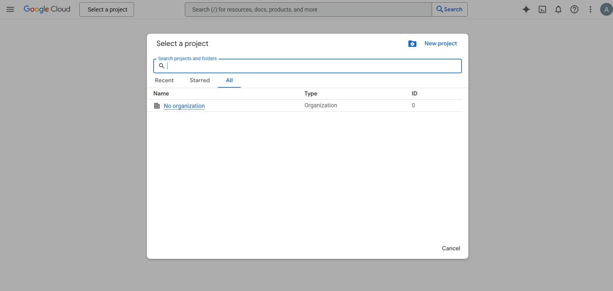
- Fill in:
- Project name: ecommerce-olist-analysis
- Project ID: it will generate one automatically, but if it creates an ID very different from the project name, click edit and enter the same name as the project or an easier name (e.g., ecommerce-olist-analysis-id)
- Location: No organization
- Click "CREATE"
- Wait 10-30 seconds
- Click "SELECT PROJECT" when the notification appears

STEP 1.3: Enable BigQuery API
- In the side menu (☰), go to "APIs & Services" → "Library" 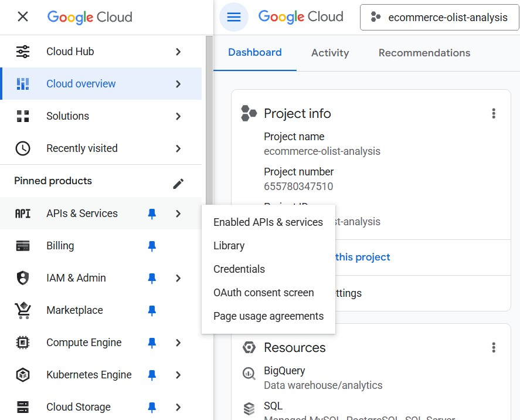
- In the search bar, type: BigQuery API
- Click "BigQuery API" 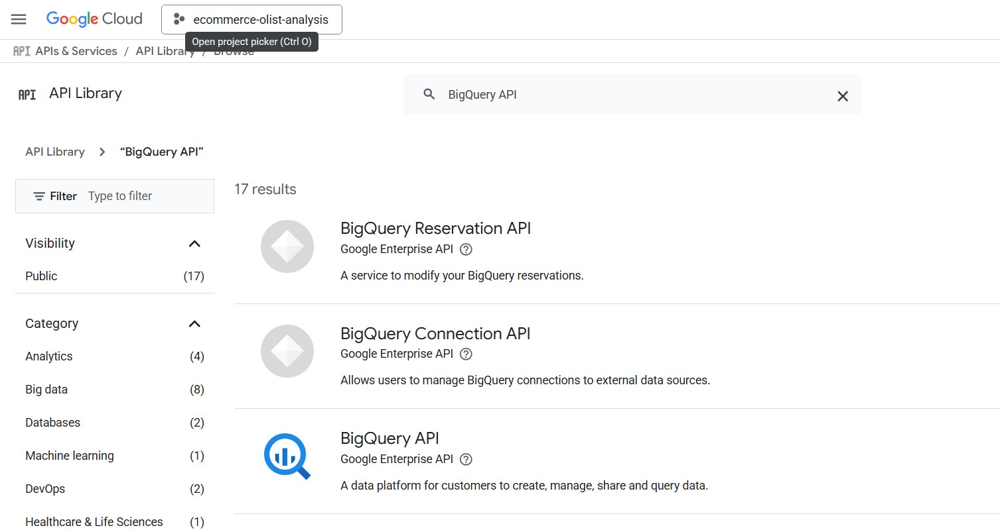
- Click "ENABLE"
- Wait for activation (10-20 seconds)
STEP 1.4: Create Dataset in BigQuery
- In the side menu (☰), go to "BigQuery" → "SQL workspace" 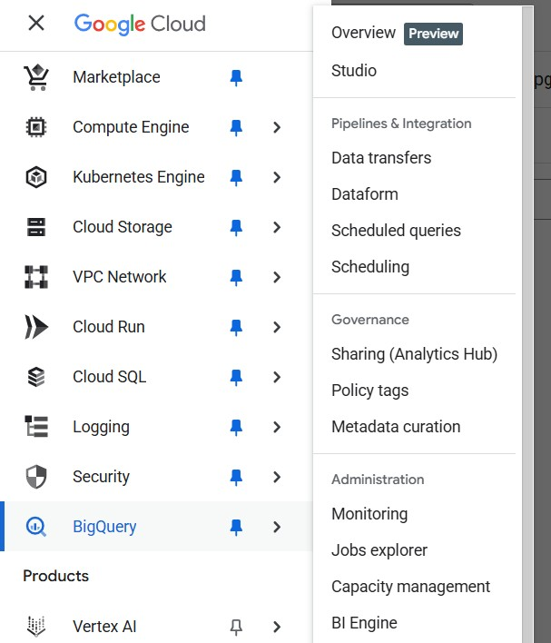
- On the left sidebar, find your project (ecommerce-olist-analysis)
- Click the 3 dots next to the project name
- Click "Create dataset" 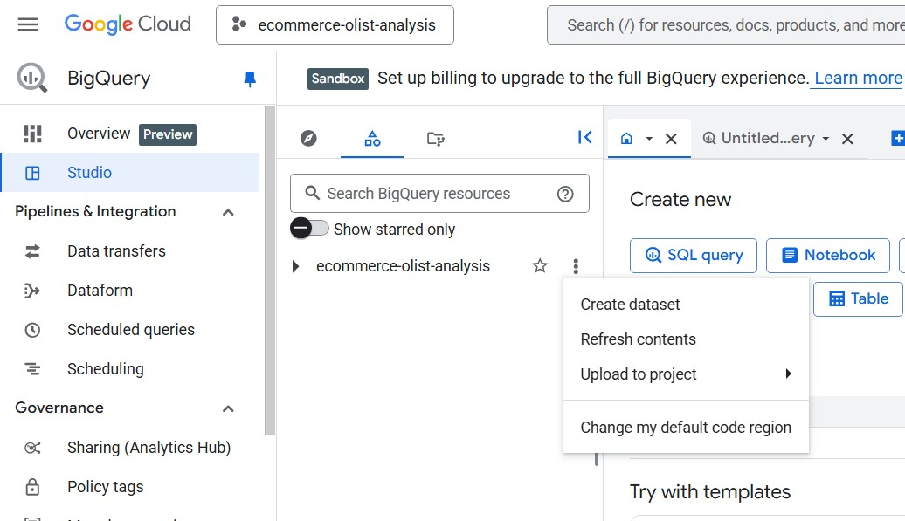
- Fill in:
- Dataset ID: olist_ecommerce
- Data location: us (multiple regions in United States) – IMPORTANT: use US for Free Tier!
- Open Advanced Option and go to Default table expiration: leave unchecked
- Click "CREATE DATASET"
PHASE 2: UPLOAD CSVs TO BIGQUERY
STEP 2.1: Prepare CSV files
- Go to https://www.kaggle.com/datasets/olistbr/brazilian-ecommerce
- Download the CSVs
- Open Windows Explorer
- Create the raw folder at C:\YOUR-FOLDER\ecommerce-analysis\data\raw\
- Place the 9 CSV files you downloaded in this folder
STEP 2.2: Upload CUSTOMERS table
- In the BigQuery Console, click the dataset oList_ecommerce (left sidebar)
- Click "CREATE TABLE" (button at the top or in the 3 dots of the dataset) 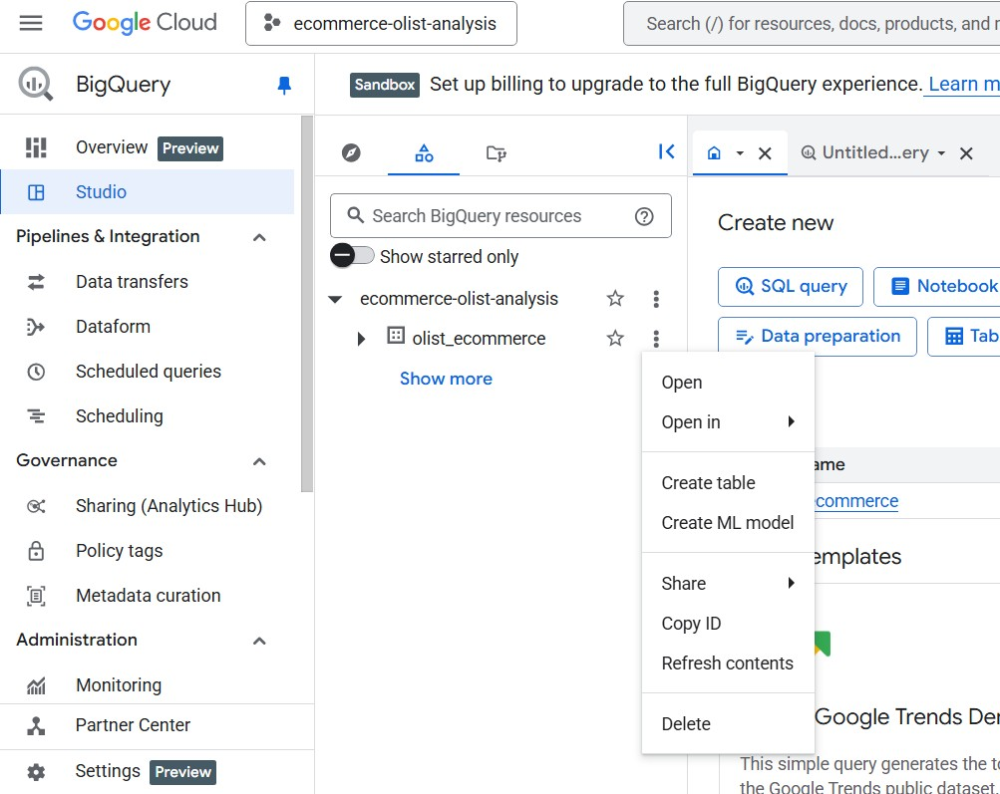
- Fill in:
- Source:
- Create table from: Upload
- Select file: click and choose oList_customers_dataset.csv
- File format: CSV
- Destination:
- Project: ecommerce-olist-analysis
- Dataset: oList_ecommerce
- Table: customers ~ IMPORTANT: name without "olist_" and without "_dataset"
- Schema:
- Check "Auto detect"
- Advanced options:
- Header rows to skip: 1 (skip header)
- Check "Allow jagged rows"
- Check "Allow quoted newlines"
- Source:
- Click "CREATE TABLE" 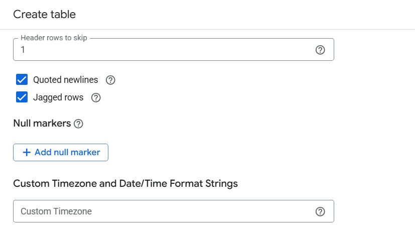
- Wait for upload (1-2 minutes)
- You should see "Table created successfully" or "Load job Created"
STEP 2.3: Upload remaining tables
Repeat STEP 2.2 for each file, using these table names:
| File | BigQuery Table Name |
|---|---|
| olist_customers_dataset.csv | customers (already done) |
| olist_geolocation_dataset.csv | geolocation (optional) |
| olist_order_items_dataset.csv | order_items |
| olist_order_payments_dataset.csv | order_payments |
| olist_order_reviews_dataset.csv | order_reviews |
| olist_orders_dataset.csv | orders |
| olist_products_dataset.csv | products |
| olist_sellers_dataset.csv | sellers |
| product_category_name_translation.csv | product_category_translation |
Total time: 15-20 minutes for all uploads
Note: For the product_category_name_translation.csv file, you'll need to make a correction:
Don't check Auto detect, but click Edit as text and paste the following code:
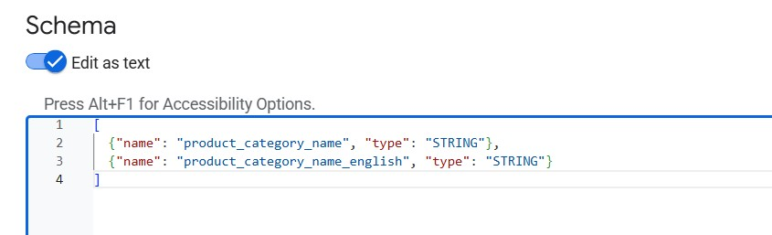
[
{"name": "product_category_name", "type": "STRING"},
{"name": "product_category_name_english", "type": "STRING"}
]
Complete the rest of the process.
{"name": "product_category_name", "type": "STRING"},
{"name": "product_category_name_english", "type": "STRING"}
]
STEP 2.4: Verify data was loaded
- In BigQuery Console, click the orders table (left sidebar)
- Click the "PREVIEW" tab
- Should show the first rows of data
- Or run this query:
- Click "QUERY" (button at the top)
- Type:
SELECT COUNT(*) as total_orders
FROM `ecommerce-olist-analysis.olist_ecommerce.orders` - Click "RUN"
- Should return ~99,441 orders 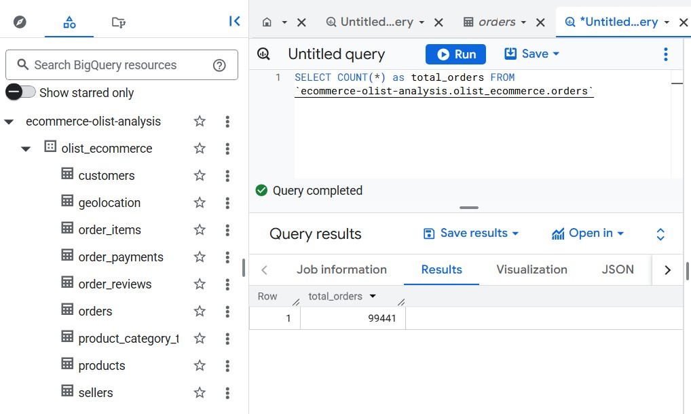

PHASE 3: INSTALL AND CONFIGURE DBT CORE
STEP 3.1: Install dbt locally (Windows)
- Open VS Code
- Open the project folder: C:\YOUR-FOLDER\ecommerce-analysis
- Open Terminal in VS Code (Ctrl + `)
- Create Python virtual environment:
python -m venv venv
- Activate virtual environment:
venv\Scripts\activate
- Install dbt-bigquery:
pip install dbt-bigquery
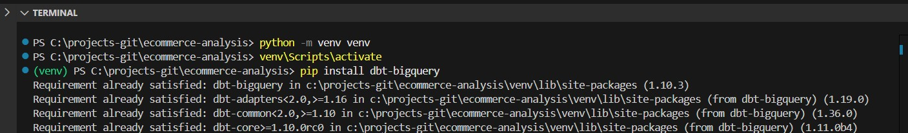
- Wait for installation (2-3 minutes)
- Verify installation:
dbt --versionShould show the version as in the image
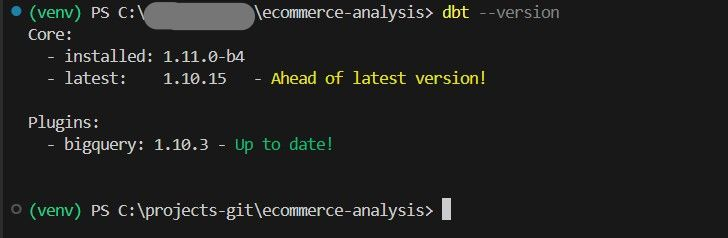
STEP 3.2: Create Service Account in GCP
- In Google Cloud Console, go to ☰ → "IAM & Admin" → "Service Accounts" 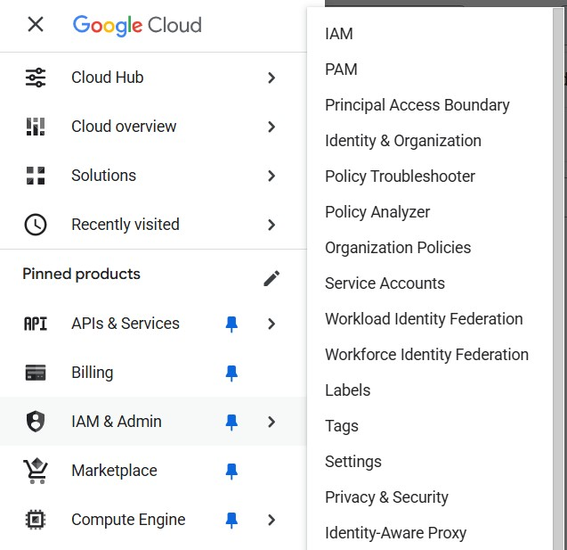
- Click "+ CREATE SERVICE ACCOUNT" 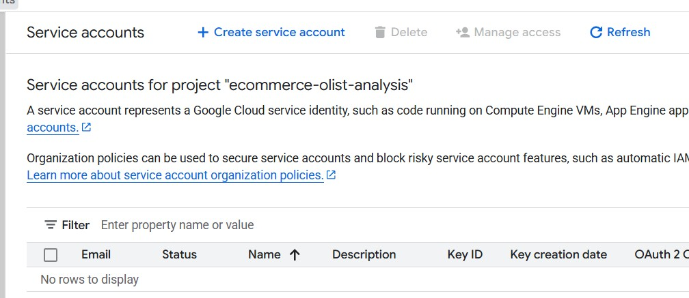
- Fill in:
- Service account name: dbt-bigquery
- Service account ID: will auto-fill
- Description: Service account for dbt transformations
- Click "CREATE AND CONTINUE" 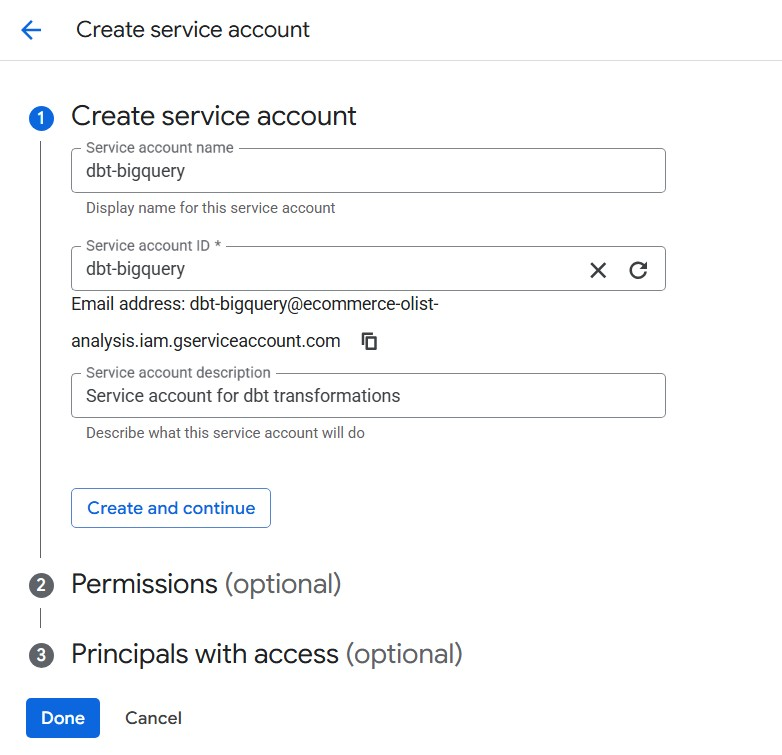
- In the "Grant this service account access to project" section:
- Role: select "BigQuery Admin"
- Click "CONTINUE"
- Click "DONE" 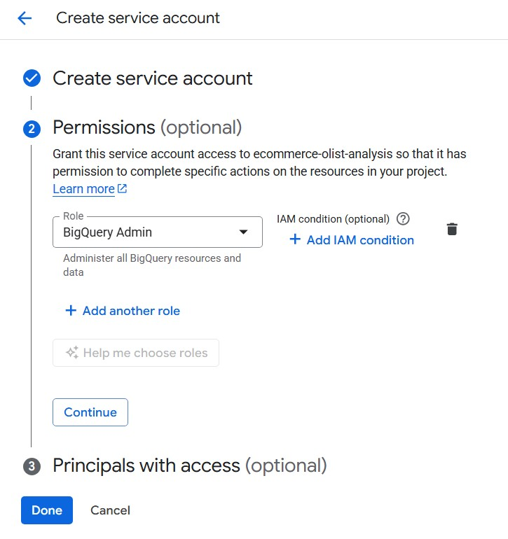
STEP 3.3: Download Service Account JSON key
- In the Service Accounts list, find dbt-bigquery@...
- Click the 3 dots (actions) at the end of the row
- Click "Manage keys" 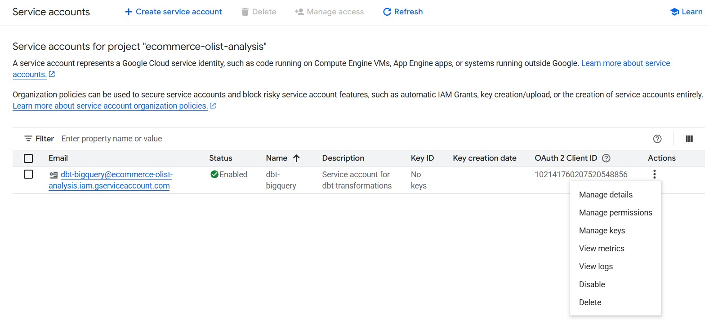
- Click "ADD KEY" → "Create new key" 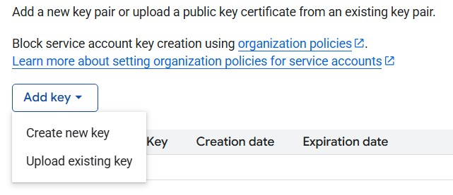
- Select "JSON"
- Click "CREATE"
- A JSON file will be automatically downloaded (e.g., ecommerce-olist-analysis-xxxxx.json) this will be your key
- Create the keys folder so it looks like this C:\YOUR-FOLDER\ecommerce-analysis\keys
- Move your key to this folder and rename it to gcp-key.json
STEP 3.4: Initialize dbt project
- In VS Code terminal (with venv active), type:
dbt init
- Answer the questions:
- Project name: Olist_analytics
- Which database: type 1 (BigQuery)
- Method of authentication: type 2 (or the number that appears for service-account)
- Keyfile location: C:\YOUR-FOLDER\ecommerce-analysis\keys\gcp-key.json
- Project ID: enter the project ID (e.g., ecommerce-olist-analysis)
- Dataset: olist_ecommerce_dbt - New dataset for dbt models
- Threads: 4
- Location: US (use the corresponding number)
- Timeout: 300
STEP 3.5: Test connection to BigQuery
- Enter the dbt folder:
cd olist_analytics
- Test the connection:
dbt debug
- Should show several green lines with a check and at the end:
All checks passed!
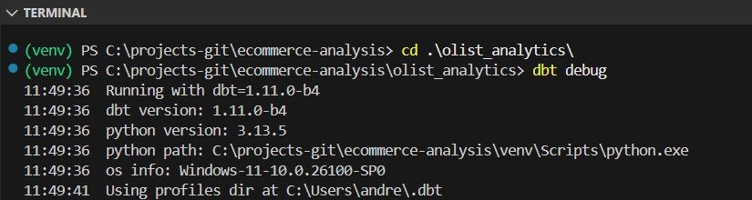
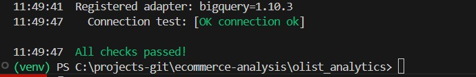
- If there's an error: verify that the gcp-key.json path is correct in the profiles.yml file
PHASE 4: CREATE DBT MODELS (SQL TRANSFORMATIONS)
STEP 4.1: Understand dbt structure
Inside olist_analytics/, you'll see:
olist_analytics/
├── models/
│ ├── example/ ← DELETE later
│ │ ├── schema.yml
├── dbt_project.yml
└── ...
├── models/
│ ├── example/ ← DELETE later
│ │ ├── schema.yml
├── dbt_project.yml
└── ...
STEP 4.2: Configure dbt_project.yml
- In VS Code, open List_analytics/dbt_project.yml (respect the spacing, it's essential)
- Locate the models: section
- Replace the entire models: block with:
models:
olist_analytics:
staging:
+materialized: view
+schema: staging
marts:
+materialized: table
+schema: marts - Save the file (Ctrl + S)
STEP 4.3: Create folder structure
- In VS Code file explorer, inside olist_analytics/models/:
- Delete the example folder (select and press Delete)
- Create these folders (right-click → New Folder):
models/
├── staging/
└── marts/
STEP 4.4: Create staging model - stg_orders.sql
- Inside models/staging/, create file: stg_orders.sql
- Paste this content:
-- Staging: Orders with basic cleaning
SELECT
order_id,
customer_id,
order_status,
CAST(order_purchase_timestamp AS TIMESTAMP) as order_purchase_timestamp,
CAST(order_approved_at AS TIMESTAMP) as order_approved_at,
CAST(order_delivered_carrier_date AS TIMESTAMP) as order_delivered_carrier_date,
CAST(order_delivered_customer_date AS TIMESTAMP) as order_delivered_customer_date,
CAST(order_estimated_delivery_date AS TIMESTAMP) as order_estimated_delivery_date
FROM {{ source('olist_ecommerce', 'orders') }}
WHERE order_status IS NOT NULL - Save (Ctrl + S)
STEP 4.5: Create sources file
- Inside models/staging/, create file: sources.yml
- Paste this content:
version: 2
sources:
- name: olist_ecommerce
database: ecommerce-olist-analysis
schema: olist_ecommerce
tables:
- name: orders
- name: order_items
- name: customers
- name: products
- name: sellers
- name: order_payments
- name: order_reviews
- name: product_category_translation - Save (Ctrl + S)
- Create models/staging/stg_order_items.sql
SELECT
order_id,
order_item_id,
product_id,
seller_id,
CAST(shipping_limit_date AS TIMESTAMP) as shipping_limit_date,
price,
freight_value
FROM {{ source('olist_ecommerce','order_items') }}
WHERE price IS NOT NULL
STEP 4.6: Create mart model - mart_rfm_analysis.sql
- Inside models/marts/, create file: mart_rfm_analysis.sql
- Paste this content:
-- RFM Analysis Model
WITH customer_orders AS (
SELECT
c.customer_id,
c.customer_state,
COUNT(DISTINCT o.order_id) AS frequency,
SUM(oi.price) AS monetary_value,
MAX(o.order_purchase_timestamp) AS last_order_date
FROM {{ ref('stg_orders') }} o
JOIN {{ source('olist_ecommerce', 'customers') }} c ON o.customer_id = c.customer_id
JOIN {{ ref('stg_order_items') }} oi ON o.order_id = oi.order_id
GROUP BY c.customer_id, c.customer_state
),
rfm_calc AS (
SELECT
customer_id,
customer_state,
frequency,
monetary_value,
DATE_DIFF(CURRENT_DATE(), DATE(last_order_date), DAY) AS recency,
NTILE(4) OVER (ORDER BY DATE_DIFF(CURRENT_DATE(), DATE(last_order_date), DAY) DESC) AS r_score,
NTILE(4) OVER (ORDER BY frequency) AS f_score,
NTILE(4) OVER (ORDER BY monetary_value) AS m_score
FROM customer_orders
)
SELECT
customer_id,
customer_state,
recency,
frequency,
monetary_value,
r_score,
f_score,
m_score,
CASE
WHEN r_score = 4 AND f_score IN (3,4) AND m_score IN (3,4) THEN 'Champions'
WHEN r_score IN (3,4) AND f_score IN (1,2,3,4) AND m_score IN (1,2,3,4) THEN 'Loyal Customers'
WHEN r_score = 3 AND f_score IN (1,2) AND m_score IN (1,2) THEN 'Potential Loyalists'
WHEN r_score = 4 AND f_score = 1 AND m_score = 1 THEN 'New Customers'
WHEN r_score = 2 AND f_score IN (2,3) AND m_score IN (2,3) THEN 'At Risk'
WHEN r_score = 1 AND f_score IN (1,2,3,4) AND m_score IN (1,2,3,4) THEN 'Lost Customers'
ELSE 'Others'
END AS customer_segment
FROM rfm_calc - Save (Ctrl + S)
STEP 4.7: Run dbt models
- In VS Code terminal, make sure you're in the olist_analytics/ folder:
cd C:\YOUR-FOLDER\ecommerce-analysis\olist_analytics(The Python virtual environment must be active, if not use: venv\Scripts\activate)
- Run the models:
dbt run
- Should show:
Running with dbt=...
Found 2 models, 0 tests, 0 snapshots...
Completed successfully
Done. PASS=2 WARN=0 ERROR=0 SKIP=0 TOTAL=2
STEP 4.8: Verify in BigQuery
- Go back to BigQuery Console
- Click "REFRESH" on the side panel (refresh icon)
- You'll see a NEW dataset: olist_ecommerce_dbt
- Inside it:
- staging.stg_orders (view)
- marts.mart_rfm_analysis (table)
- Click marts.mart_rfm_analysis → PREVIEW tab
- Should show the segmented customers!
PHASE 5: CREATE MORE DBT MODELS
STEP 5.1: Create Cohort Retention model
- Create file: models/marts/mart_cohort_retention.sql
- Paste:
-- Cohort Retention Analysis
WITH first_orders AS (
SELECT
customer_id,
MIN(DATE(order_purchase_timestamp)) AS first_order_date,
FORMAT_DATE('%Y-%m', MIN(DATE(order_purchase_timestamp))) AS cohort_month
FROM {{ ref('stg_orders') }}
GROUP BY customer_id
),
order_months AS (
SELECT
o.customer_id,
f.cohort_month,
DATE_DIFF(DATE(o.order_purchase_timestamp), DATE(f.first_order_date), MONTH) AS months_since_first
FROM {{ ref('stg_orders') }} o
JOIN first_orders f ON o.customer_id = f.customer_id
),
cohort_data AS (
SELECT
cohort_month,
months_since_first,
COUNT(DISTINCT customer_id) AS num_customers
FROM order_months
GROUP BY cohort_month, months_since_first
),
cohort_sizes AS (
SELECT
cohort_month,
SUM(num_customers) AS cohort_size
FROM cohort_data
WHERE months_since_first = 0
GROUP BY cohort_month
)
SELECT
c.cohort_month,
c.months_since_first,
c.num_customers,
s.cohort_size,
ROUND(c.num_customers * 100.0 / s.cohort_size, 2) AS retention_rate
FROM cohort_data c
JOIN cohort_sizes s ON c.cohort_month = s.cohort_month
ORDER BY c.cohort_month, c.months_since_first - Save
STEP 5.2: Create LTV by State model
- Create file: models/marts/mart_ltv_by_state.sql
- Paste:
-- LTV by State
WITH customer_revenue AS (
SELECT
c.customer_id,
c.customer_state,
SUM(oi.price) AS total_revenue,
COUNT(DISTINCT o.order_id) AS total_orders
FROM {{ ref('stg_orders') }} o
JOIN {{ source('olist_ecommerce', 'customers') }} c ON o.customer_id = c.customer_id
JOIN {{ ref('stg_order_items') }} oi ON o.order_id = oi.order_id
GROUP BY c.customer_id, c.customer_state
)
SELECT
customer_state,
COUNT(customer_id) AS total_customers,
SUM(total_revenue) AS total_revenue,
ROUND(SUM(total_revenue) / COUNT(customer_id), 2) AS ltv_per_customer
FROM customer_revenue
GROUP BY customer_state
ORDER BY total_revenue DESC - Save
STEP 5.3: Run new models
- In terminal:
dbt run
- Should show:
PASS=4 (2 new models + 2 previous)
PHASE 6: CONNECT LOOKER STUDIO
STEP 6.1: Access Looker Studio
- Open your browser
- Go to: https://lookerstudio.google.com
- Log in with the same Google account as GCP
- Click "Create" → "Data Source"
STEP 6.2: Connect to BigQuery
- In the connectors list, search for and click "BigQuery" 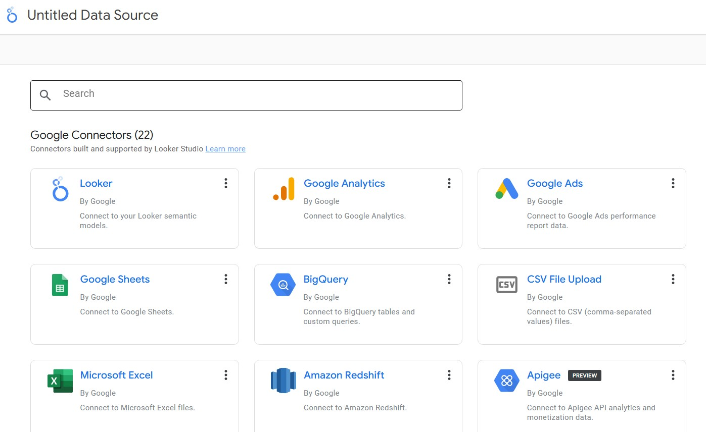
- Click "AUTHORIZE" (if prompted) 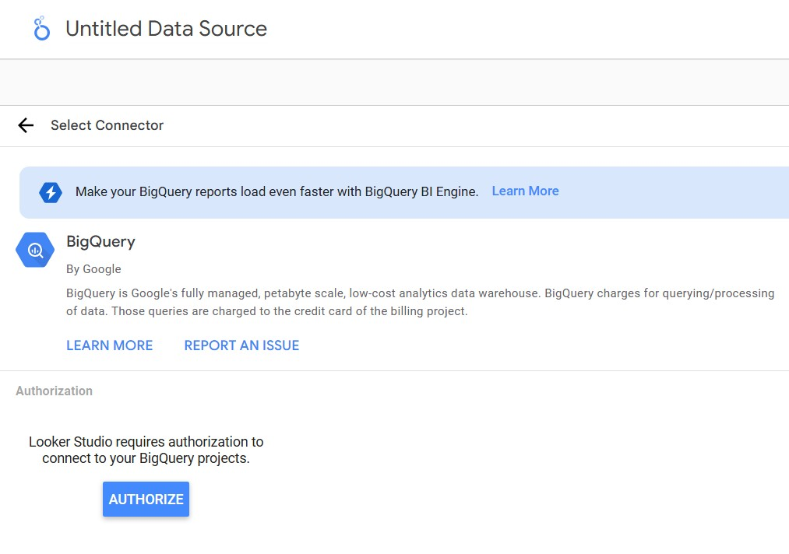
- Select:
- MY PROJECTS
- Project: ecommerce-olist-analysis
- Dataset: oList_ecommerce_dbt
- Table: mart_rfm_analysis (start with this one)
- Click "CONNECT" (top right corner) 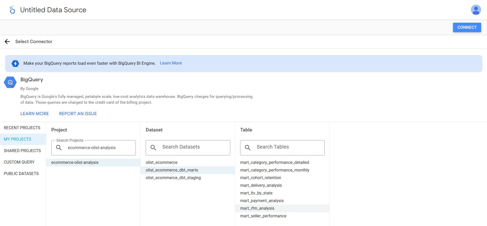
- Wait for fields to load (10-20 seconds)
- Click "CREATE REPORT" (top right corner) 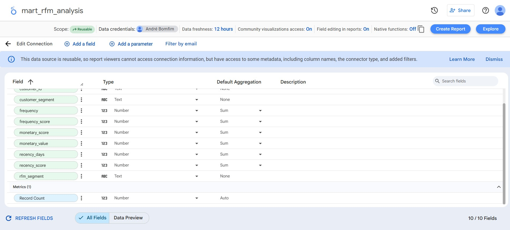
- Click "ADD TO REPORT" in the popup
Disclaimer: Since Looker Studio is undergoing changes, I won't include images of the chart parameters, but Gemini or Google's AI search assistant can help you navigate.
STEP 6.3: Create first dashboard - RFM Analysis
- In Looker Studio editor:
- Click "Add a chart" → "Scorecard"
- Drag to the top of the page
- Metric: Record Count (rename to "Total Customers")
- Add a Pie Chart:
- Click "Add a chart" → "Pie chart"
- Dimension: customer_segment
- Metric: Record Count
- Chart name: "Customer Segments Distribution"
- Add a Table:
- Click "Add a chart" → "Table"
- Dimensions: customer_segment
- Metrics:
- Record Count (rename to "Customers")
- monetary_value (Aggregation as: AVG)
- Frequency (Aggregation as: AVG)
- Add a Bar Chart:
- Dimension: customer_segment
- Metric: monetary_value (Aggregation as SUM)
- Sort: Descending
It will look something like this image below:
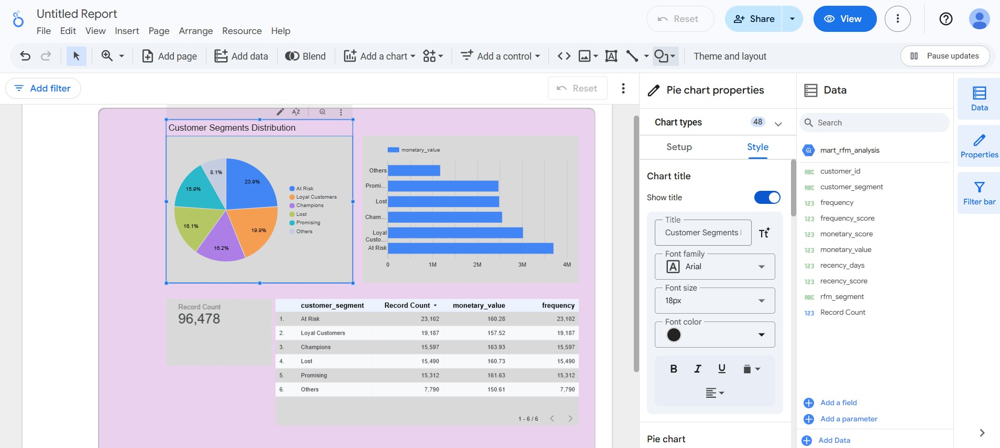STEP 6.4: Create dashboard - Cohort Retention
- Click "File" → "New Report"
- Click "Add data"
- Select:
- BigQuery
- Dataset: oList_ecommerce_dbt
- Table: mart_cohort_retention
- Click "ADD"
- Add a Table Pivot with Heatmap:
- Click "Add a chart" → "Table Pivot with Heatmap"
- Row dimension: cohort_month
- Column dimension: months_since_first
- Metric: retention_rate
- Color scale: configure gradient (green = high, red = low)
STEP 6.5: Create dashboard - LTV by State
- Create new report connecting to mart_ltv_by_state table
- Add Geo Chart:
- Geo dimension: customer_state
- Metric: ltv_per_customer
- Type: Brazil → States
- Add Table with ranking:
- Dimensions: customer_state
- Metrics: total_customers, total_revenue, ltv_per_customer
- Sort by total_revenue DESC
STEP 6.6: Share dashboards
- In each dashboard, click "Share" (top right corner)
- Click "Get shareable link"
- Configure: "Anyone with the link can view"
- Copy the link
- Paste in the dashboards/looker_studio_links.md file in VS Code
PHASE 7: DOCUMENT THE PROJECT
STEP 7.1: Take dashboard screenshots
- In each Looker Studio dashboard
- Press Print Screen (PrtScn) on keyboard
- Open Paint or Snipping Tool
- Paste and save to C:\YOUR-FOLDER\ecommerce-analysis\dashboards\screenshots\
- rfm_analysis.png
- cohort_retention.png
- ltv_by_state.png
STEP 7.2: Generate dbt documentation
- In VS Code terminal (olist_analytics/ folder):
dbt docs generate
- Then:
dbt docs serve
- Will automatically open in browser: http://localhost:8080
- Explore the interactive model documentation!
- Take screenshot and save as dbt_documentation.png
TROUBLESHOOTING
Error: "Invalid credentials" in dbt
- Verify that the gcp-key.json path is correct
- Verify that the Service Account has BigQuery Admin role
Error: "Permission denied" in BigQuery
- Make sure the dataset is in US region
- Verify that the Service Account has permissions
Looker Studio won't connect
- Use the same Google account as GCP
- Verify that the olist_ecommerce_dbt dataset exists
dbt run fails
- Run dbt debug first
- Read the complete error message
- Verify SQL syntax in models